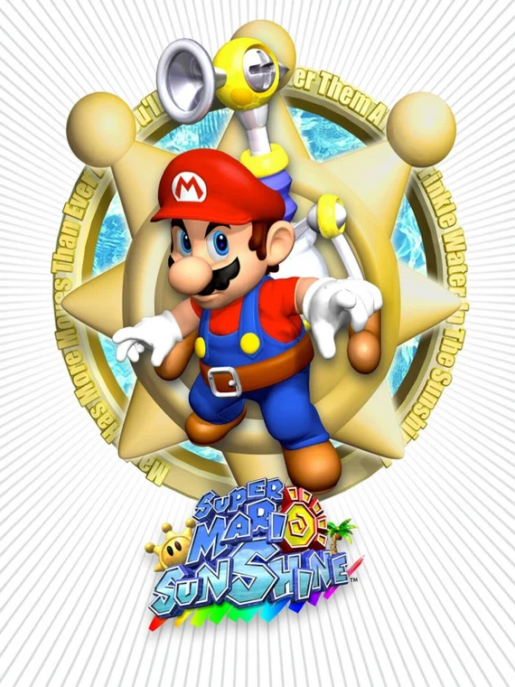

About Me

My name is George Maidhof, a Masters of Engineering student at Cornell University. I am studying Electrical and Computer Engineering with a Computer Science Minor and distinction in Engineering Leadership from the Selander Center.

In my career I want to focus on the digital design of hardware—either FPGAs or ASICs. Long term, I aim to take a management position where I can lead a team toward a unified goal while helping those around me reach their dreams. To succeed in this field, I must first gain the necessary technical experience.

To operate at my fullest, I stay mentally and physically active through various hobbies.
Hobbies
